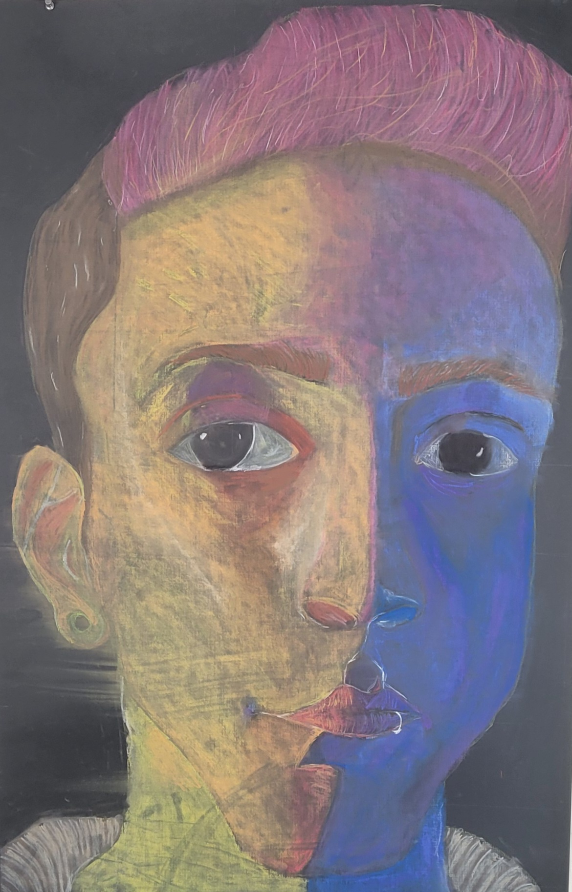

Hey Benny, You're still relatively new to Whitworth, so it might seem a little odd to get a thank-you letter from me—but I need you to know how much of an impact you've had on my education. No one—no one—has pushed my drawing skills as much as you have. Back in high school, I studied under Cornelius Brudi, the guy who designed the original Magic: The Gathering cards and helped design currency in Switzerland. Even he struggled to help me understand drawing fundamentals. Then I worked with Katie's sister, Maria, where I learned a little bit of everything but never really went deep into anything. But you? You cracked the code. Thanks to you, I understand texture, lighting, shape, and even some art history in ways I never thought I could. And on top of that, you did something very few professors do—you accepted my request for honest, unfiltered feedback. You didn't pull punches, and I needed that. That kind of directness is the most helpful thing in my life. You've helped me grow more confident in my drawings and kept me interested in the process. Thank you, sincerely.
